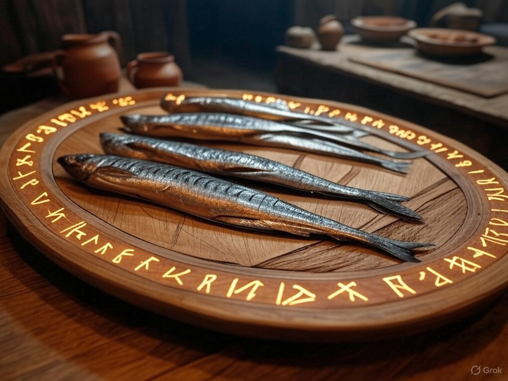

Home
Valkyrie’s Choice Smoked Fish (Smoked Mackerel)

Odin oversees Valhalla, where the Valkyries bring fallen warriors. This dish honors the Valkyries’ role with a
smoky, battle-ready flavor profile.
Description:
A simple yet flavorful dish of smoked fish, reminiscent of Viking preservation techniques.
Ingredients:
- 4 mackerel fillets (or other oily fish)
- 1/4 cup (60 g) coarse sea salt
- 2 tbsp brown sugar
- 1 tsp black pepper
- Wood chips for smoking (alder or applewood recommended)
Instructions:
- Mix salt, sugar, and pepper to create a curing mix. Rub it generously over the fish fillets.
- Wrap and refrigerate for 4–6 hours to cure.
- Rinse off the cure, pat dry, and let the fillets air-dry for 1 hour.
- Prepare a smoker with wood chips and smoke the fillets at 200°F (93°C) for 1–1.5 hours, or until flaky and
golden.
- Serve cold or warm, with rye bread or as part of a feast.